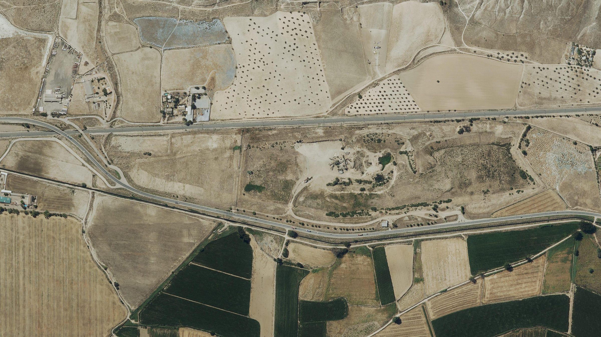
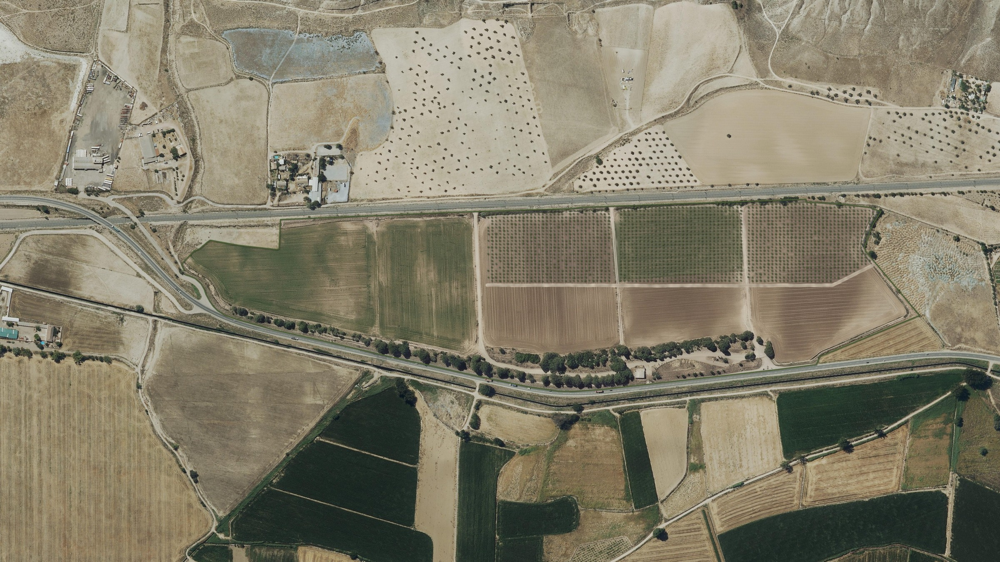
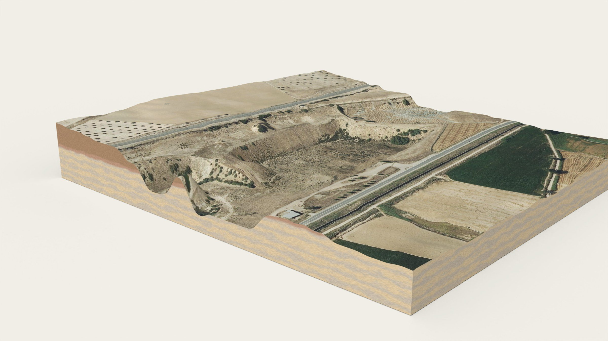
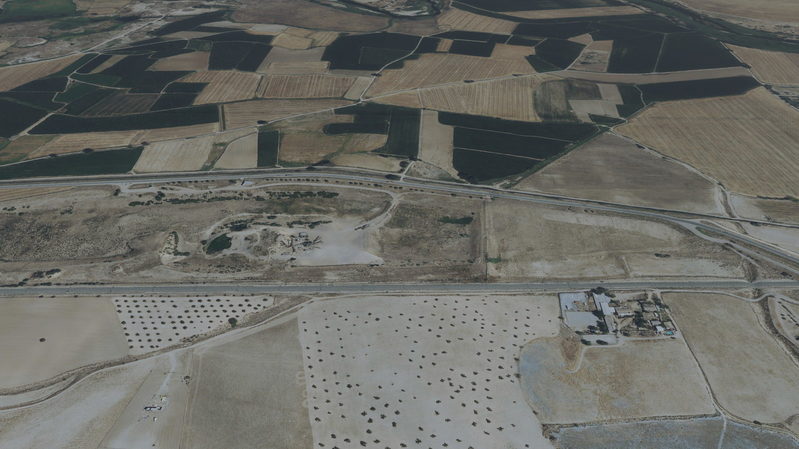

Así quedará la finca Viña Grande
Son fotos reales del terreno y la ortofoto oficial del IGN. En cada «después» solo cambia el suelo de la antigua gravera: el hueco se rellena hasta la cota de la vía del tren, se nivela y vuelve a ser tierra de cultivo, como las parcelas de la vega que la rodean. Desliza sobre cada imagen para comparar.
- Superficie
- 32,5 ha324.831 m² en nueve parcelas del polígono 9
- Relleno
- 1.970.802 m³de tierras y materiales inertes
- Hueco actual
- 8–15 mbajo la cota original en la zona central y norte
- Uso final
- Agrícolasin arbolado nuevo, por estar en el BIC Salinas de Espartinas
Fuente: Proyecto de control arqueológico INF/0218/2023 (GEA Arqueólogos, julio de 2026) y estudio topográfico de la explotación (septiembre de 2023).
La finca desde el aire
Arriba, la vía del tren; abajo, la M-307. Toda la franja entre las dos se rellena y queda dividida en parcelas de cultivo con sus caminos. La hilera de árboles de la cacera de riego se conserva.


Ortofoto PNOA 2023 (IGN), girada para que la finca quede en horizontal: el norte queda a la derecha. Escala aproximada: el ancho de la imagen son 1,8 km. Fuera del perímetro del relleno la imagen es la original.
Desde la finca, mirando a la vía
Al fondo, la vía y los cerros de yeso. El corte de la gravera, la explanada y las casetas desaparecen: el terreno sube hasta la cota de la vía y queda una sola parcela llana, sembrada.


Foto de la visita del 14-10-2026. El cielo, los cerros y la vía son los píxeles originales de la cámara.
Hacia la vega del Jarama
Mirando al este, sobre el fondo del hueco. Los caminos de la explotación y el matorral dejan paso a un campo de cereal a la altura de las parcelas de la vega.


Foto de la visita del 14-10-2026. El cielo, el horizonte y la arboleda son los píxeles originales de la cámara.
Lo que no se ve desde arriba: el hueco
Maqueta del terreno real cortada por la parte más honda de la finca, con la vía al fondo a la izquierda y la M-307 a la derecha. Hoy el corte muestra la gravera excavada en las capas de limos, arenas y gravas. Restaurada, el hueco queda ocupado por el relleno (en gris), con la tierra vegetal y los cultivos encima.


Modelo digital del terreno del IGN (MDT05) con la ortofoto PNOA 2023 encima. Tramo de 600 × 630 m. El relieve está exagerado tres veces para que se lea la profundidad; las capas del subsuelo son orientativas.
La finca en 3D, desde los cerros
El mismo terreno visto como desde un dron, a escala real, mirando hacia la vega del Jarama. Restaurada, la franja entre la vía y la M-307 se lee como una parcela más de la vega.


Modelo digital del terreno del IGN y ortofotos PNOA 2023, sin exagerar el relieve.
Cómo están hechas
Cada pareja parte de una imagen real: la ortofoto PNOA de 2023 o las fotos que tomamos en la visita. El «después» es esa misma imagen, en la que solo se ha cambiado el terreno de la gravera.
En la vista aérea, la zona cambiada coincide con el perímetro del relleno del estudio topográfico, y fuera de él no se ha tocado nada. En las fotos se conservan los píxeles originales del cielo, los cerros, la vía y la arboleda. El cereal que se ve es orientativo.
El 3D está hecho con el modelo digital del terreno del IGN. Para la finca restaurada, el hueco se rellena con una superficie suave que se apoya en el terreno de alrededor, con la vía y la M-307 como bordes. Medido sobre ese modelo, el relleno sale de 1.936.878 m³, un 1,7 % menos que los 1.970.802 m³ del estudio topográfico.
Qué necesito que valides
- Si el acabado agrícola es el que queréis enseñar, o si preferís otro cultivo o la tierra solo labrada.
- Si la cota de la vía es la referencia correcta en toda la finca.
- Si hacen falta más puntos de vista, por ejemplo desde la M-307 o desde la entrada.
- Si el corte en 3D se entiende o preferís verlo sin exagerar el relieve.
Con el visto bueno sigo con un vídeo corto del relleno por fases y monto el dosier final para la administración.
Recuperaciones y Vertidos Soto, S.L. · Grupo Soto. Imágenes de trabajo; no sustituyen a los planos del proyecto.